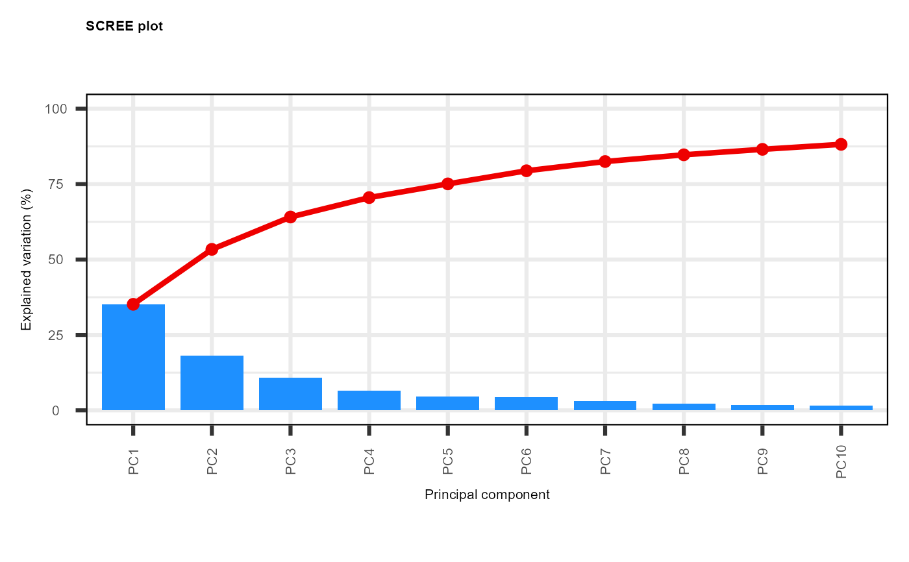
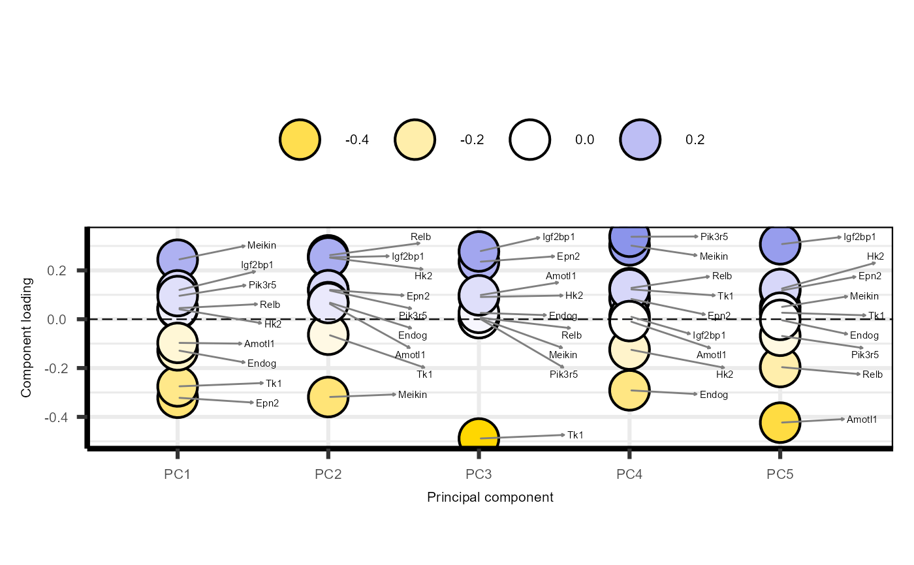
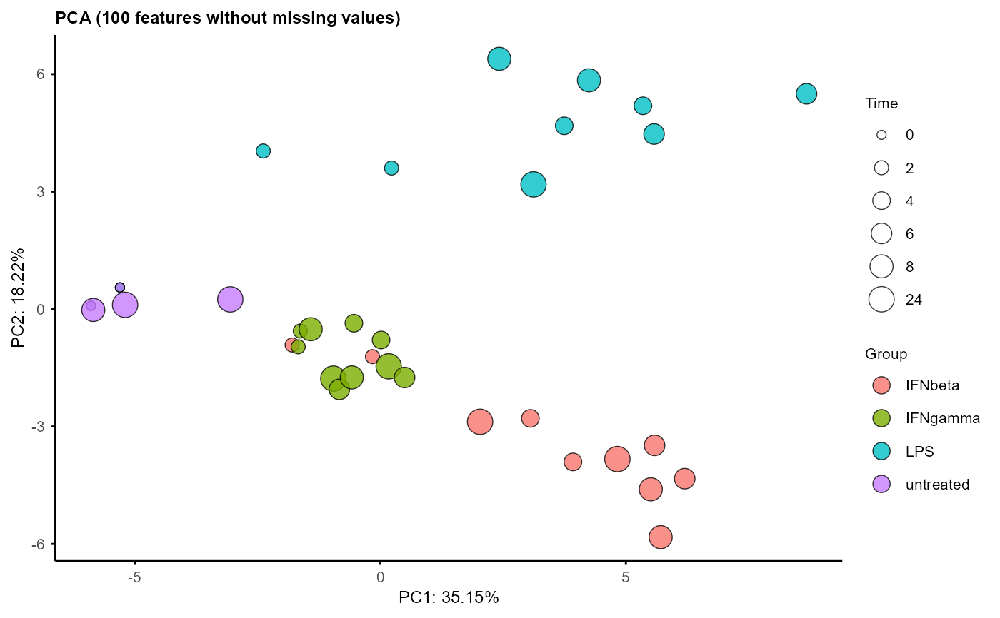
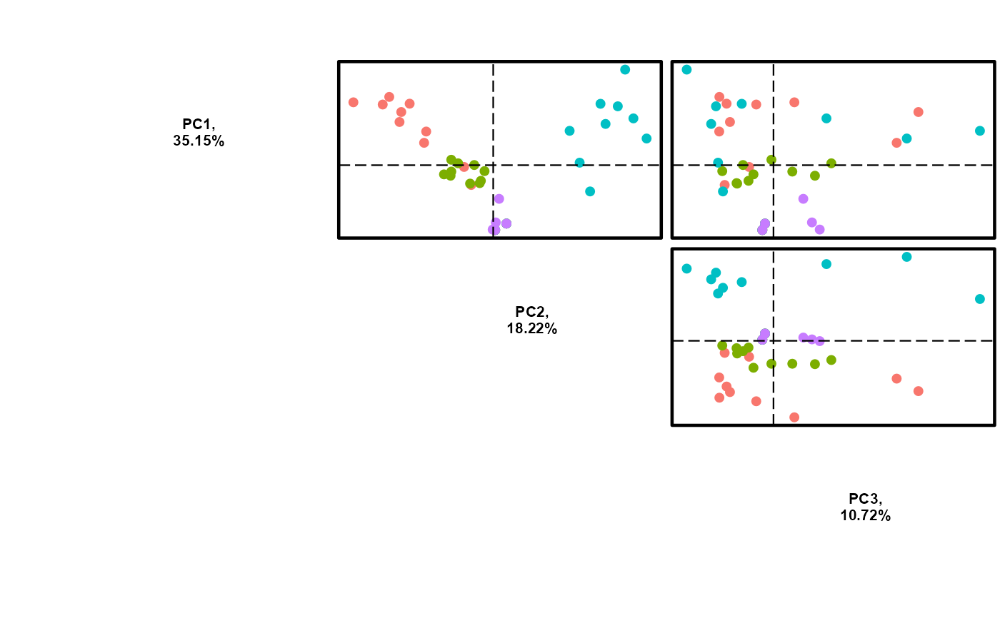

<<<<<<< Updated upstream

Plot PCA 3D
=======Plot PCA in 3D
>>>>>>> Stashed changes Source:R/plot_pca_3D.R
plot_pca_3D.RdPlot principal component analysis (PCA) results in 3D. This
function takes the output PCA object of the plot_pca function and
visualizes the samples in a 3D space defined by the specified principal
components.
The samples are coloured by Group and sized by Time.
Usage
plot_pca_3D(pca, pcs = seq(1, 3))Arguments
- pca
A PCA object returned by the
plot_pca()function.- pcs
A numeric vector specifying which three principal components to plot (default is 1:3)
Value
An interactive 3D PCA plot showing the distribution of samples in the space defined by the specified principal components. The samples are coloured by Group and sized by Time.
Examples
data("example")
PC = plot_pca(example_obj, morepc = seq(1, 3))

#> -- variables retained:
#> Meikin, Epn2, Hk2, Relb, Igf2bp1, Tk1, Pik3r5, Endog, Amotl1

#> Warning: Using size for a discrete variable is not advised.

#> Scale for colour is already present.
#> Adding another scale for colour, which will replace the existing scale.
#> Scale for colour is already present.
#> Adding another scale for colour, which will replace the existing scale.
#> Scale for colour is already present.
#> Adding another scale for colour, which will replace the existing scale.

plot_pca_3D(PC, pcs = seq(1, 3))
<<<<<<< Updated upstream